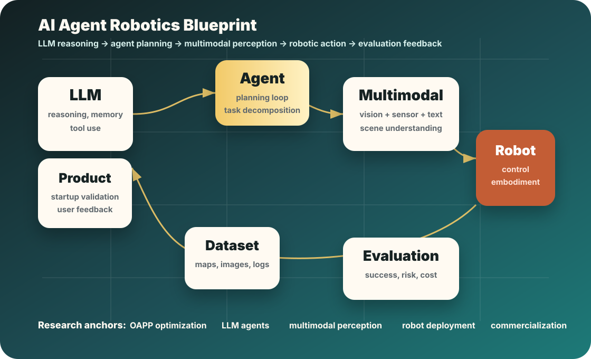
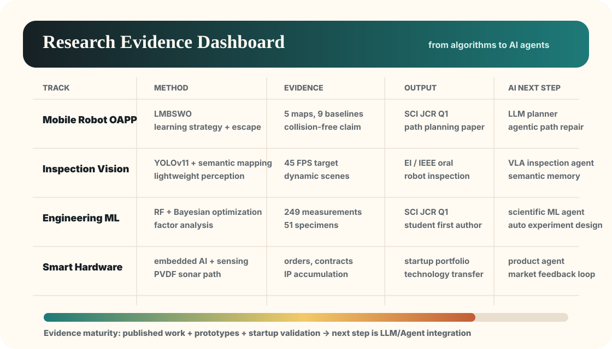

Highlights
A quick visual map of AI research, agentic robotics, and entrepreneurship.
Trustworthy agent memory
UAV agent skill evolution
Multimodal perception
Robotic execution
Embedded control
Product validation

Profile Snapshot
A concise profile of research output, product work, leadership, and service.
Education Direction
AI-oriented MPhil in progress at HKUST, building from a First Class Honours B.Eng. background in Robotics Engineering.
AI + Robotics + Embodied systemsResearch Projects
Trustworthy memory for LLM agents, self-evolving UAV agents, LMBSWO path planning, robot visual inspection, multimodal fusion, and embedded robotics.
Algorithms to embodied systemsTechnical Evidence
Path-planning validation across complex maps, embedded vision pipelines, robotic arm coordination, factor analysis, and machine-learning model comparison.
Simulation, hardware, and dataResearch Outputs
An anonymous AAAI 2027 submission on agent memory is under review; published journal and conference work spans robot planning, machine vision, structural ML, energy, and MoE systems.
Robotics, AI, energy, and engineeringIP & Products
Software copyrights, utility-model patent work, intelligent recognition devices, AI office systems, smart-home systems, PVDF sonar, and smart pet hardware.
Research-to-product portfolioLeadership & Service
Technology-company founder experience, competition leadership, reviewer service, entrepreneurship forums, volunteer work, and industry-research association roles.
Founder, reviewer, organizerSelected Research
Agent memory, self-evolving agents, perception, and embodied AI.

Trustworthy memory for LLM agents
Research on robust and reliable persistent memory in multi-agent systems. The title and method details are withheld during peer review.
View submission statusSelf-evolving UAV agents
Ongoing research on self-evolving UAV agents that acquire reusable skills through planning, multimodal perception, tool use, and closed-loop flight feedback.
View current directionLMBSWO obstacle avoidance path planning
Improved Spider-Wasp Optimizer for mobile robot path planning, integrating learning strategy, dual-median-point guidance, and local escape mechanisms.
Read publication signalAI visual inspection and semantic mapping
Robot visual perception system for dynamic inspection scenes, combining lightweight detection, semantic mapping, and adaptive resolution control.
View project timelineMachine learning for engineering structures
Cross-domain work applying factor analysis, multiple ML models, and Bayesian optimization to composite structural performance prediction.
Open academic profilesASC-CogFusion multimodal feature fusion
Heuristic-algorithm-based multisensor multimodal feature fusion work, connecting sensor reasoning, cognition-inspired fusion, and robust robot perception.
See resume cardsFruit-picking robot with embedded AI
RAICOM champion project combining STM32F411 lower-computer control, Jetson Nano image recognition, robotic arm coordination, and autonomous path following.
View awardsPVDF sonar and intelligent sensing
Product-facing work around PVDF membrane sonar, intelligent recognition devices, and sensor-oriented technology transfer for robotics and marine applications.
View venture workPublications
Research outputs across robotics, AI, and engineering.
Anonymous submission on trustworthy persistent memory for LLM agents. Submitted to AAAI 2027 | Under review. Title and method details withheld during peer review. 面向大模型智能体可信持久记忆的匿名投稿。 已投稿 AAAI 2027｜审稿中。审稿期间暂不公开具体标题与方法细节。
An Improved Spider-Wasp Optimizer for Obstacle Avoidance Path Planning in Mobile Robots. Mathematics 2024. SCI | JCR Q1.
Behaviour prediction of connections in thin-walled steel-ply-bamboo structures based on machine learning. Sustainability. SCI | JCR Q1.
Research on robot autonomous inspection visual perception system based on improved YOLOv11 and SLAM. ICAACE 2025 | IEEE oral report.
Research progress on the integration of robot vision, computer vision, and machine learning. International Journal of Current Research in Science, Engineering & Technology.
A risk-averse cooperative framework for neighboring energy hubs under joint carbon, heat and electricity trading market with P2G and renewables. Renewable Energy. SCI TOP | JCR Q1.
Predicting Olympic Medal Performance for 2028: Machine Learning Models and the Impact of Host and Coaching Effects. Applied Sciences. SCI | JCR Q2.
Exploring and Enhancing Advanced MoE Models: From DeepSpeed-MoE to DeepSeek-V3. AINIT 2025 | IEEE.
Evolution of piezoelectric PVDF membrane for energy transducer and membrane distillation. Chemical Engineering Journal. SCI TOP | JCR Q1.
Enhancing Export Potential of Digital Service Trade in BRI Countries. DEIC 2025 | ACM.
Entrepreneurship
Research-to-product work in robotics, sensors, and intelligent hardware.
Deep-sea robotics and PVDF sonar · Nanjing Zhongke Zhilian
Founder work around deep-sea explorer robots and PVDF membrane sonar, including product experiments, signed orders, institutional cooperation, and intellectual property.
AI + hardware + pet products
Ongoing startup exploration focused on multimodal behavior recognition, user demand research, supply-chain confirmation, UI design, product delivery, and market validation.
Experience Timeline
Hands-on work across robotics, automation, market research, and embodied AI.
Automation instrumentation intern · Yancheng Kaiyuan Automation
Worked with safety inspection and automatic-control project teams in industrial automation scenarios.
PLC control engineering intern · Jiangsu Hongli Intelligent Equipment
Participated in intelligent equipment work involving control engineering and practical automation systems.
Market research intern · Nanjing Jinmili
Investigated market demand, product positioning, and technology application paths for consumer-facing products.
Awards, IP & Service
Competitions, intellectual property, and community work.
Competition Awards
- RAICOM Robot Developer Competition, International First Prize, project leader.
- China Robotics Skills Competition, National First Prize, project leader.
- China International College Students' Innovation Competition, provincial silver medal.
- MCM/ICM Honorable Mention twice.
Patents & Software Copyright
- AI integrated office control system, software copyright.
- LifeMate smart home background operating system, software copyright.
- Machine learning device for intelligent recognition, utility model patent.
- Data acquisition device for machine learning, accepted for review.
Service & Leadership
- Reviewer for Frontiers in Robotics and AI and Machine Learning with Applications.
- Hosted 15+ entrepreneurship forums and speaking events.
- 100+ volunteer hours and 20+ service projects.
- President, manager, or director roles in entrepreneurship and industry-research organizations.
Interactive Resume
Swipe through core resume cards.
Education
AI-oriented MPhil in progress at HKUST. First Class Honours B.Eng. in Robotics Engineering, with research focus on robotics, machine vision, path planning, and intelligent hardware.
Academic projects
Trustworthy memory for LLM agents, self-evolving UAV agents, LMBSWO path planning, multimodal fusion, robot inspection perception, and embedded robotics.
Competitions
RAICOM Robot Developer Competition International First Prize, China Robotics Skills Competition National First Prize, and MCM/ICM Honorable Mention twice.
Internship experience
Internships at Yancheng Kaiyuan Automation, Jiangsu Hongli Intelligent Equipment, and Nanjing Jinmili across industrial automation, PLC control, and market research.
Intellectual property
Software copyrights and patent work around intelligent recognition, machine-learning data acquisition, smart home systems, and AI office control.
Research outputs
An anonymous AAAI 2027 submission on agent memory is under review, alongside published journal and conference work in robot planning, visual inspection, engineering structures, energy systems, and MoE models.
Entrepreneurship
Founder experience at Nanjing Zhongke Zhilian, plus technical-founder work spanning PVDF sonar, intelligent robotics, membrane technology, and smart pet products.
Service
Reviewer for Frontiers in Robotics and AI and Machine Learning with Applications, member of interdisciplinary sustainability communities, entrepreneurship forum host, and volunteer contributor.
Profiles & Contact
Academic profiles and direct contact.
WeChat Official Account
硅基边缘
AI, embodied intelligence, robotics, and edge-side product notes.